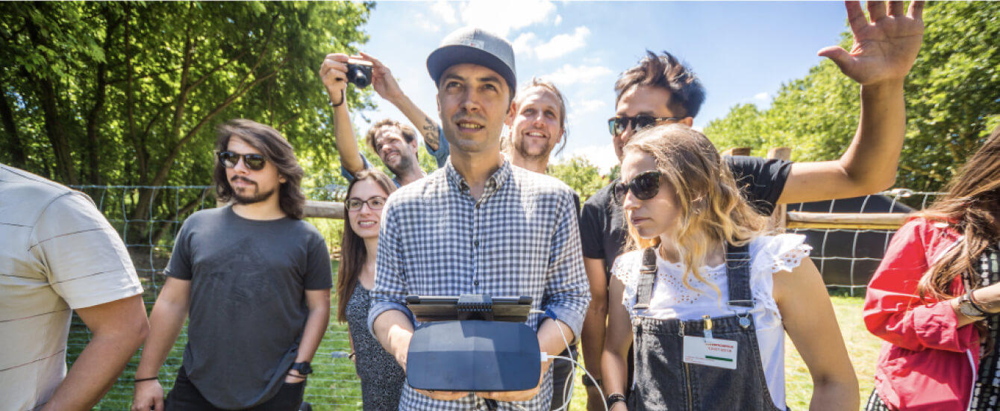

Fab City
Summit
The annual Fab City Summit brings together city leaders, enthusiasts, industry and policy-makers to debate and explore innovations in productive cities. Historically hosted by a Network member, it is a chance for new Network members to pledge to join, and existing members to exchange learnings and advance our collective roadmap. Consisting of keynote talks, panels and workshops it is complemented by the Fab City Campus, a pop-up Fab City demonstrator to demonstrate various citizen-led approaches to local circularity and productivity of food, energy and materials.
-
{% assign events = site.data.roadmap.events | sort: "year" %}
{% for item in events %}
-
{{item.year}} – {{item.location}}
{{item.title}}
{{item.description}}
{% endfor %}